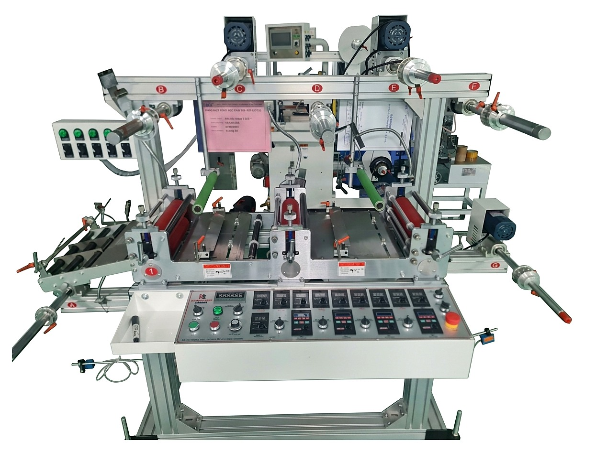

Đây là phiên bản máy cán màng, dán màng thế hệ mới được trang bị thêm cụm ép - cán nhiệt (gia nhiệt khi cán) và dao cắt màng tích hợp ngay trên dây chuyền, giúp rút ngắn công đoạn so với model cũ. Máy vận hành thông qua bộ điều khiển HMI & PLC, có cảm biến lực căng giữ ổn định quá trình chạy màng.
Không đeo găng vải lỏng, trang sức, dây đeo hoặc quần áo rộng khi thao tác gần lô cán và trục quay; không đưa tay vào điểm kẹp giữa các lô khi máy đang chạy.